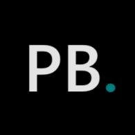
Mis certificados.
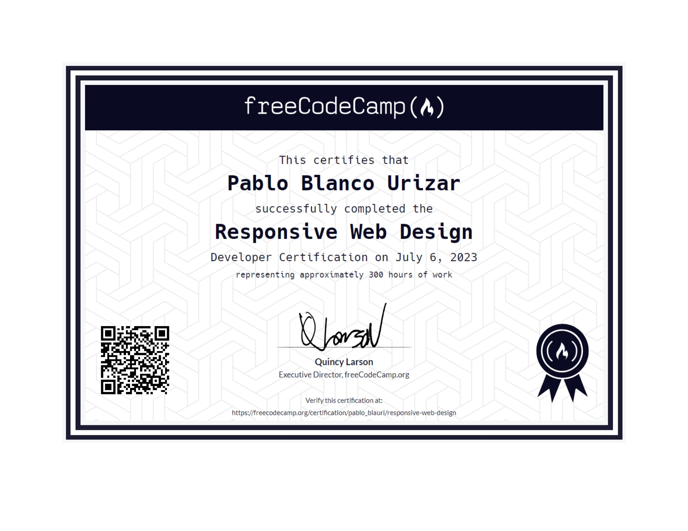
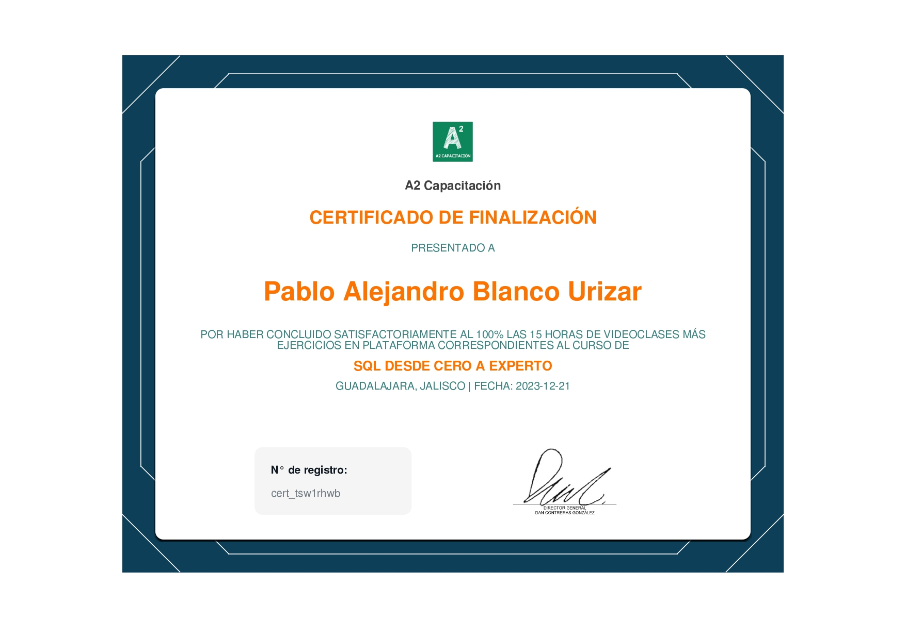
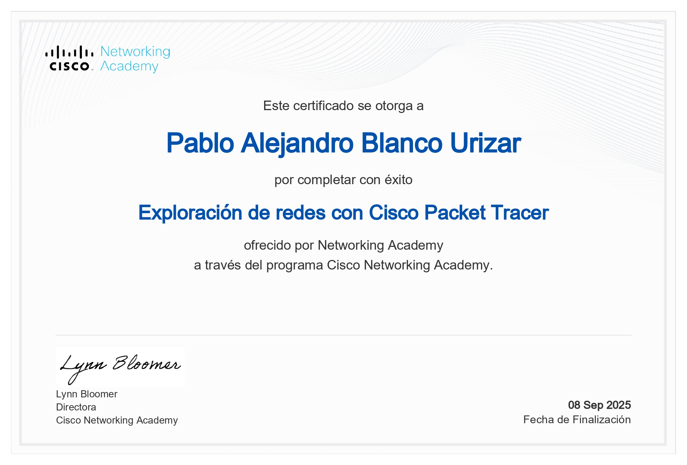
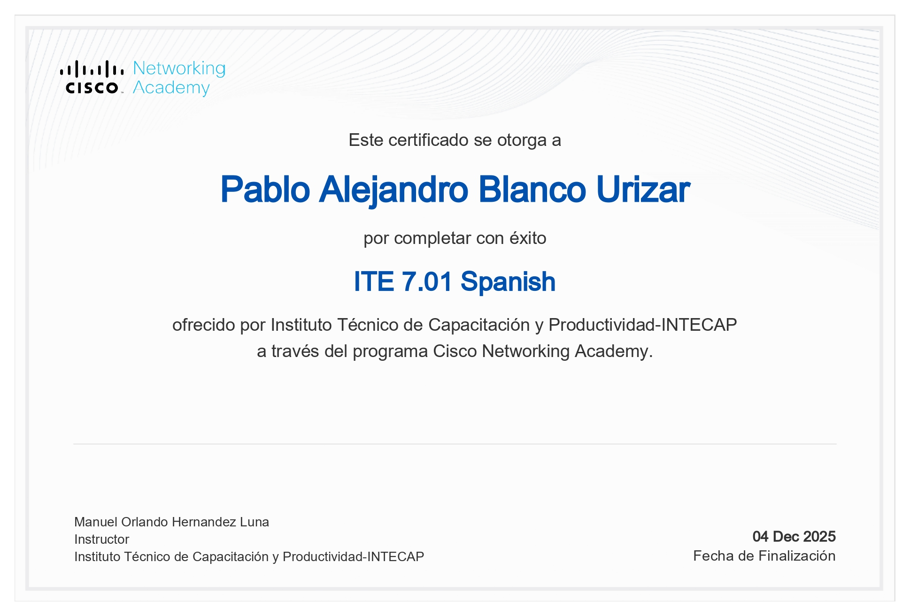
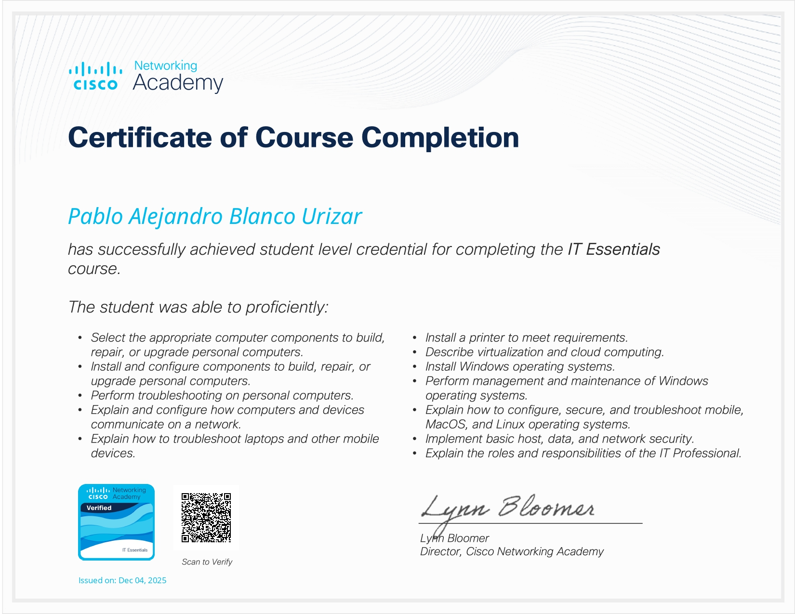
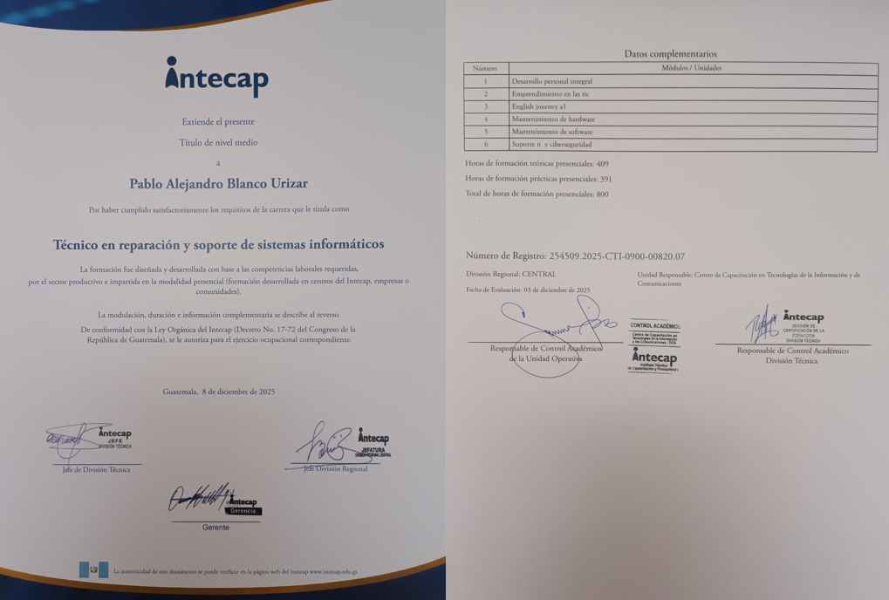
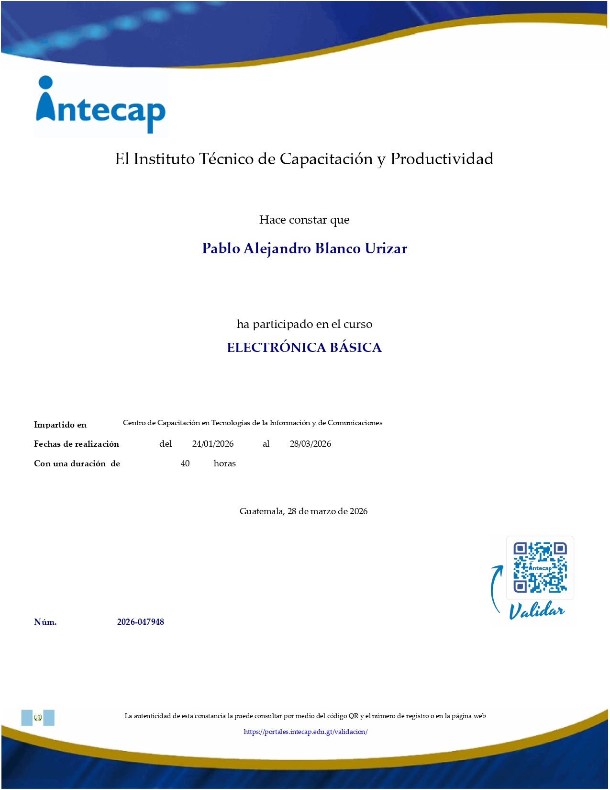
×


En mi experiencia como técnico freelance, he trabajado tanto con particulares como con empresas, realizando mantenimiento preventivo, limpieza interna de computadoras y soporte técnico para impresoras y otros equipos.
Me enfoco en ofrecer un servicio técnico claro, honesto y orientado a las necesidades del cliente, explicando cada solución de forma sencilla y comprensible. También brindo asesoría en la adquisición de equipos, actualización de componentes y buenas prácticas para el cuidado de los sistemas informáticos.
Mis responsabilidades como profesional de soporte técnico:







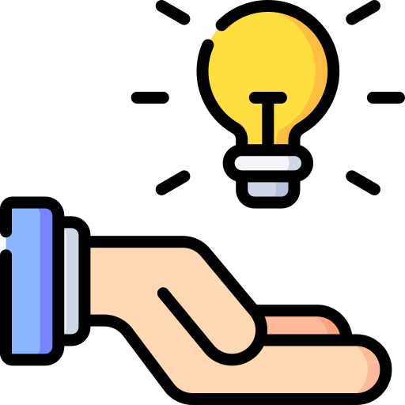
Brindo orientación para ayudar a tomar las mejores decisiones en el área informática. Ya sea en la compra de equipos, actualización de componentes o implementación de soluciones tecnológicas, analizo las necesidades del cliente y recomiendo opciones eficientes, funcionales y ajustadas a su presupuesto.
Realizo evaluaciones completas de equipos de cómputo para identificar fallas tanto de hardware como de software. A través de herramientas especializadas y pruebas técnicas, determino la causa del problema y propongo soluciones claras antes de proceder con cualquier reparación.
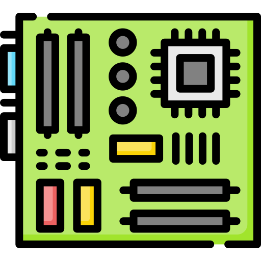
Llevo a cabo limpieza interna y revisión de componentes físicos para prevenir fallas y prolongar la vida útil del equipo. Esto incluye eliminación de polvo, verificación de temperaturas, revisión de ventiladores, fuentes de poder y conexiones.
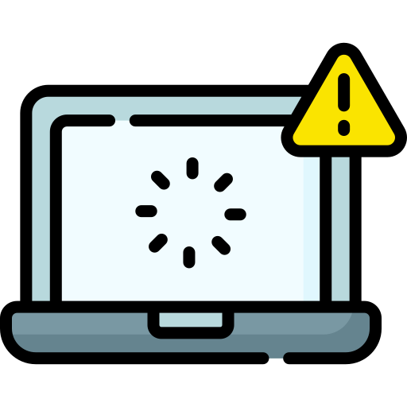
Optimizo el rendimiento del sistema mediante limpieza de archivos innecesarios, actualización de programas, eliminación de virus o malware y configuración adecuada del sistema operativo. Esto permite un funcionamiento más rápido, seguro y estable.
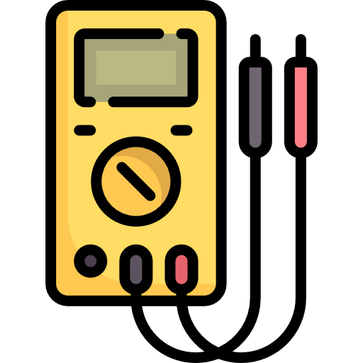
Realizo reparaciones a nivel electrónico en equipos informáticos, identificando y corrigiendo fallas en placas, componentes y circuitos. Este servicio permite recuperar equipos que muchas veces se consideran irreparables, reduciendo costos de reemplazo.
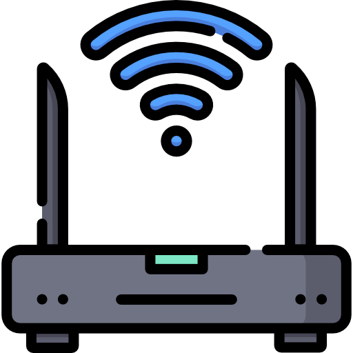
Instalo y configuro redes locales para hogares y pequeños negocios. Esto incluye conexión de dispositivos, configuración de routers, cableado básico y solución de problemas de conectividad para asegurar una red estable y funcional.
p.a.blauri@gmail.com
Ciudad de Guatemala, Guatemala.